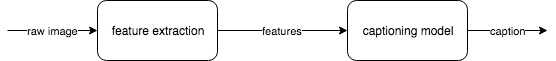
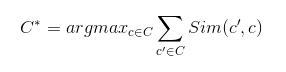
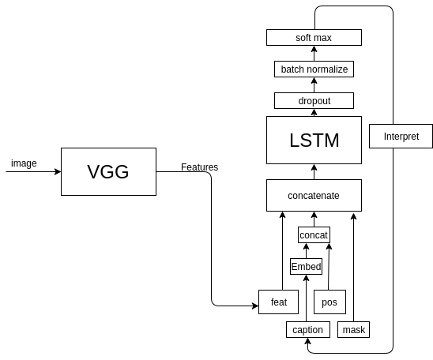
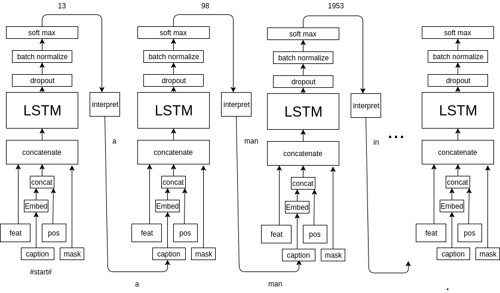

Image Captioning Using Neural Network (CNN & LSTM)
In this blog, I will present a image captioning model, which generate a realistic caption for an input image. To help understand this topic, here are examples:
These two images are random images downloaded from internet, but our model can still generate realistic caption for the image. Our model is trying to understand the objects in the scene and generate a human readable caption. For our baseline, we use GIST for feature extraction, and KNN (K Nearest Neighbors) for captioning. For our final model, we built our model using Keras, and use VGG (Visual Geometry Group) neural network for feature extraction, LSTM for captioning. Our code with a writeup are available on Github. Also, we have a short video on YouTube.
How this works
- Feature extraction
- Train a captioning model
- Generate a caption from through model
To train a image captioning model, we use the Flickr30K dataset, which contains 30k images along with five captions for each image. And we extract features from the images and save these them as numpy array. Then we feed the features into captioning model and get the model trained. Given a new image, we first do a feature extraction, then we feed the features into trained model and get prediction. Quite straightforward, right?

Baseline: GIST & KNN
For our baseline, we use GIST to present the images as their features which is array with length 4096. Then we fed these features into KNN model (use ball tree in sklearn):
# read image
img = Image.open('./data/Flicker8k_Dataset/'+im_name)
# convert to array
img = np.asarray(img)
# get descriptor (features)
desc = gist.extract(img)
# trains includes features and captions of images
knn = BallTree(trains['feats'])
The training part is quite simple! Then we are going to do prediction. To get the prediction for test image A, we use GIST to extract features A' from A. And we use BallTree to find the K nearest neighbors of A' from which we get all the candidate captions. The last step is deciding which caption we are going to use. Here, we make the decision according to consensus. We use BLEU score in nltk to measure the similarity between two captions, then we choose the caption which maximize the following formula:
 Then we get our prediction! Simple enough! Let's look at something more complicated.
Final Model: VGG & LSTM (Keras)
For our final, we built our model using Keras, which is a simple wrapper for implementing the building blocks of advanced machine learning algorithms. To achieve higher performance, we also use GPU. Here is the instruction of install Keras with GPU and use Tensorflow as backend.
During training, we use VGG for feature extraction, then fed features, captions, mask (record previous words) and position (position of current in the caption) into LSTM. The ground truth Y is the next word in the caption.
For prediction, we first extract features from image using VGG, then use #START# tag to start the prediction process. Finally, use a dictionary to interpret the output y into words.
Feature Extraction: VGG16/19
There are two versions of VGG network, 16 layers and 19 layers. We mainly focus on VGG16 which is the 16 layers version. VGG network is one type of CNN network, which is designed for object recognition and achieved good performance on ImageNet dataset.

VGG16 network take image with size 224x224x3 (3 channel for RGB) as input, and return a 1000 array as output, indicating which class the object in the image belongs to. Therefore, we need to first resize the image:
from keras.preprocessing import image
from keras.applications.vgg16 import preprocess_input
# format the image for VGG network
img = image.load_img(img_path, target_size=(224, 224))
x = image.img_to_array(img)
x = np.expand_dims(x, axis=0)
x = preprocess_input(x)
VGG network consists of convolutional layers, pooling layers and full-connected layers. The last three layers are full-connected layers. The last layer is a softmax layer which only tell us which category the image belongs to. However, the second last layer, fc-2 layer, contains the features of a image as a 4096 array. Therefore, we get our output from the fc-2 layer. The model would look like this:
# load vgg16 model
model = VGG16(weights='imagenet', include_top=True)
featextractor_model = Model(input=model.input,
outputs=model.get_layer('fc2').output)
Then, we can use this model to extract features:
feat = featextractor_model.predict(x)
Building/Training The Predictive Model
Let's first take a look at our predictive model for generating captions, then I will explain the model in more details.

First, we need to preprocess our input captions and build a dictionary to map the words to index. Then we get the following inputs:
| feat | image features |
|---|---|
| captions | for training, true caption. For prediction, #start# tag and previous prediction |
| mask | record previous words |
| position | position of current word in a sentence |
The features tell our model what objects are in the scene, and every words in the captions are telling our model, how to describe the scene. The mask tell our model which part of the scene have been described. The position input tell our model how far we have gone in the prediction process (the importance of this input would be mentioned later).
So, first, our model merge the caption input (each word in the caption) and position input using concatenate layer and go through a word embedding layer. Then all the inputs merge, and go through the LSTM cell. Then output of LSTM cell goes through Dropout and Batch Normalization layer to prevent the model from overfitting. At the end, we apply a activation layer and get the possibility distribution of next word. We can choose the word with largest possibility to be our "best word".
sent_input = Input(shape=(1,))
img_input = Input(shape=(DIM_INPUT,))
mask_input = Input(shape=(N_WORDS,)) # mark the previous word
position_input = Input(shape=(MAX_LEN,)) # mark the position of current word
# sentence embedding layer, get one word, output a vector
sent_embed_layer = Embedding(output_dim=DIM_EMBED, input_dim=N_WORDS, input_length=1)(sent_input)
sent_embed_layer = Reshape((DIM_EMBED,))(sent_embed_layer)
sent_embed_layer = concatenate([sent_embed_layer, position_input])
sent_embed_layer = Dense(DIM_EMBED)(sent_embed_layer)
# concatenate image and embedded word as input for LSTM
img_sent_merge_layer = concatenate([img_input, sent_embed_layer, mask_input])
img_sent_merge_layer = Reshape((1, DIM_HIDDEN+DIM_INPUT+N_WORDS))(img_sent_merge_layer)
lstm = LSTM(512)(img_sent_merge_layer)
# add dropout and batch normalization layer to prevent overfitting
lstm = Dropout(0.25)(lstm)
lstm = Dense(N_WORDS)(lstm)
lstm = BatchNormalization()(lstm)
out = Activation('softmax')(lstm)
self.model = Model(input=[img_input, sent_input, mask_input, position_input], output=out)
self.model.compile(loss='categorical_crossentropy',
optimizer=optimizers.Adam(lr=0.001, beta_1=0.9, beta_2=0.999, epsilon=1e-08, decay=00))
Using our pre-built dictionary, we can "interpret" the index to word and generate our prediction. During the training process, the true output is the next word in the caption. And the period present the end of the caption. Finally, we can train our model!
Image Captioning
Like training, we also need to get the features for each image to be predicted. So, the images go through the VGG16 network first, to generate the features. For captioning, we used the same LSTM mode. The first word input for the model is the "#start#" tag, and the following input are the prediction result from the previous iteration. During this process, we set the mask and position input accordingly. When we reach a prediction which produce '.', we get our final prediction!
Here is a example for generating caption--'a man on a bicycle down a dirt road.':

So, the first word is '#start#', the position is 0, and mask input is empty. The model would generate 'a' which is used as input for the next iteration. Then the word 'a' is marked by the mask input, and the position input move forward. By doing this until our model predict '.', we stop the model and get the final caption.
mask = np.zeros((caption_len, self.n_words))
caption = []
for i in range(1, caption_len):
if i == 1:
cur_word = 0
else:
# take the prediction as next word
cur_word = next_word
# set mask
mask[i,:] = np.logical_or(mask[i,:], mask[i-1,:])
mask[i, cur_word] = 1
# set current word position
pos = np.zeros(self.max_len)
pos[i-1] = 1
pred = self.model.predict([np.array(image), np.array([cur_word]), np.array([mask[i-1,:]]), np.array([pos])])[0]
next_word = pred.argmax()
# decode the output to sentences
caption.append(self.ixtoword[next_word])
if self.ixtoword[next_word] == '.':
break
At the beginning, the position wasn't part of the input, and we generate some nonsense caption, like "a man in white shirt in white shirt in white shirt...". The problem is when our model reach the second 'in', the features, caption, and mask input are exactly the same with the first one. Then our model would generate 'in white shirt' again. Therefore, we add the position input to our model so that it can know current captioning progress.
Evaluation
To evaluate the performance of our model, we use BLEU score to measure the accuracy of our prediction. For our baseline, we got BLEU score about 33.0. For our final model, we got BLEU score about 74.8.
Next Steps
Apparently, our model is not perfect, neither is our prediction process. Sometimes, we may generate some terrible captions. We can try to replace LSTM with GRU (Gated Recurrent Unit), which is a variation of LSTM. To make our prediction process better, beam search would be a promising choice. Currently, we are taking a greedy approach in which we take input and iteratively output the word that is most likely to appear the next. Beam search would considers the set of n best sentences and keep track of resulting n of the candidates, which would help generate overall most probable caption.
Thanks for reading! If you find anything I got wrong, please feel free to contact me through Email. Or if you have any questions, please let me know. Thanks!